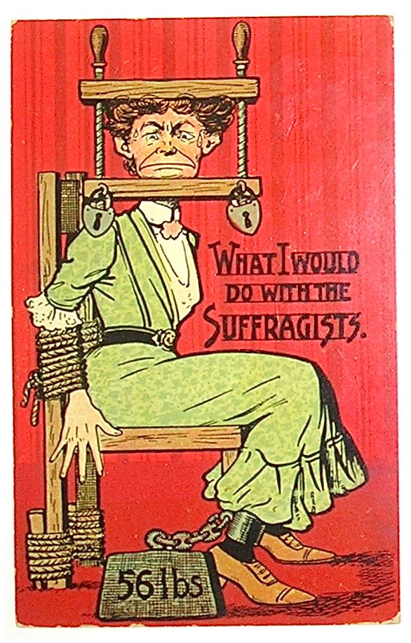
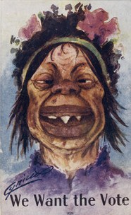
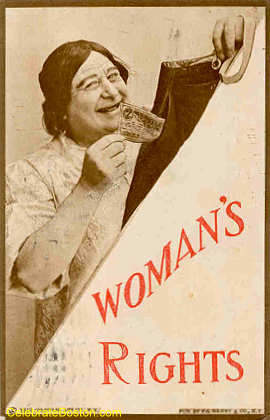
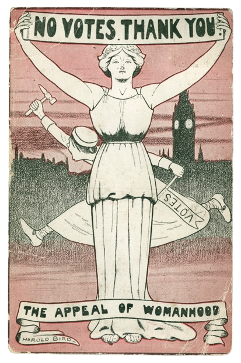
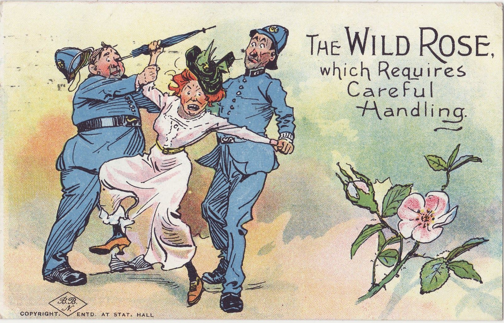

안티 서프러제트(Anti-suffragism)는 여성의 투표권을 주장하는 서프러제트 운동에 대해 반대하는 혐오 운동이다. 19세기 후반 시작된 이 흐름은 오스트레일리아, 캐나다, 영국, 아일랜드, 미국 등 서프레제트 운동이 나타난 나라에서 대다수의 남성과 여성들이 동의하였다. 이 운동은 여성과 남성의 구조적 상태를 변화 없이 유지하고, 여성에게 공평한 투표권을 요구하는 서프레제트 운동가에게 대항하기 위한 것이었다. 이것은 흔히 "가정적 페미니즘(domestic feminism)", 즉 '여성이 가정에 속할 자유가 있다'는 주장과 관련되기도 한다.
투표권을 주장하며 운동을 하는 여성에 대해 '늙은' '못생긴', '남자의 사랑을 받지 못하는', '같은 여성들을 공격하는', '투표를 강요하는', '난동을 부리는' 과 같은 말로 평가를 내리고 비난하였다.

"내가 서프러지스트와 할 수 있는 것"

"우리는 투표를 원한다"

"여성의 권리(남성의 주머니에서 지폐를 빼고 있는 여성의 그림)"

"투표 안 사요, 가세요"

"다룰 때 조심스런 손길을 요하는 거친 장미"